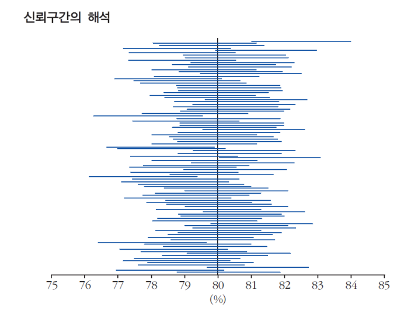
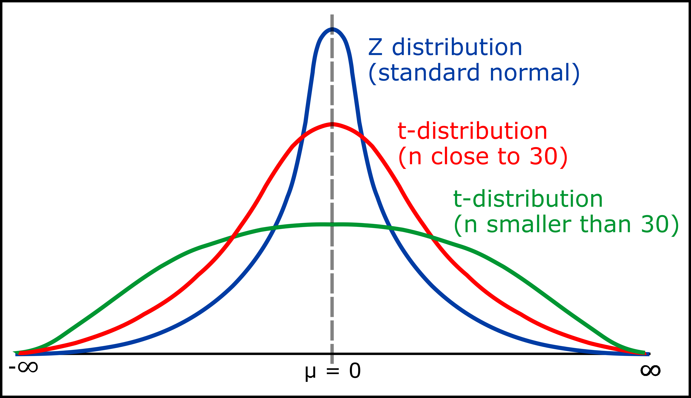

11강. 표본추출과
모수 추정
지난 강의 요약
- 확률변수는 표본공간에서 정의되는 각 사건들에 대응하는 실수 값이며, 확률분포는 확률변수가 출현할 가능성에 대한 분포를 의미한다.
- 베르누이 분포는 사건이 성공/실패로 나뉘는 베르누이 시행의 결과로서 성공에 1, 실패에 0을 대응하는 확률변수에 대한 확률분포이다.
- 이항분포는 성공확률 p를 지니는 베르누이 시행을 n번 반복한 결과로 나타난 성공횟수를 확률변수로 갖는 확률분포이다.
- 정규분포는 연속확률분포로서 이항확률변수의 n을 무한대로 늘렸을 때 그 값이 따르는 분포이다.
- 확률변수의 기대값은 특정 확률변수가 확률분포에 따라 가질 것으로 기대되는 값을 의미하며, 확률변수의 표준편차는 확률변수 값이 기대값과 차이가 나는 정도의 표준적인 크기를 의미한다.
지난 강의 요약
- 특정 확률분포를 따르는 확률변수를 n번 추출하여 그 합을 새로운 확률변수로 할 경우 (즉, 표본합) 새로운 확률변수의 표준편차는 (기존 확률변수 표준편차 $*\sqrt{n}$)이다.
- 특정 확률분포를 따르는 확률변수를 n번 추출하여 그 평균을 새로운 확률변수로 할 경우 (즉, 표본평균) 새로운 확률변수의 표준편차는 (기존 확률변수 표준편차 $/\sqrt{n}$)이다.
- 특정 확률변수의 합 혹은 평균으로 만든 새로운 확률변수의 상대적 표준편차가 추출횟수의 증가에 따라 감소하는 현상을 대수(평균)의 법칙이라 한다.
- 특정 확률변수의 합 혹은 평균으로 만든 새로운 확률변수에서 추출횟수가 충분히 많을 경우 새로운 확률변수가 정규분포로 수렴해가는 현상을 중심극한정리라 한다.
- 대수의 법칙과 중심극한정리를 통해 특정 확률분포에서 충분히 많은 수의 표본을 뽑아 만든 표본평균을 새로운 확률변수로 만들 경우 대수의 법칙을 통해 새로운 확률변수의 표준편차를 구할 수 있으며, 중심극한정리를 통해 새로운 확률변수를 정규분포로 근사시켜 모평균에 대한 확률적 추론을 할 수 있다.
표본추출, 표본통계량, 표준오차
우리가 밝히려는 것: 모집단의 특성
Q) 표본평균은 우리가 알고 싶은 모집단의 특성인 모평균을 얼마나 정확하게 반영하고 있을까?
→ 모평균 그 자체를 정확히 추정하는 것은 불가!
단, 표본평균이 모평균과 차이가 날 가능성이 얼마나 될지를 함께 제시해주어야 한다.
표본추출의 원칙
모집단에서의 표본추출은 가급적 무작위 추출 (random sampling)을 따라야 하며, 체계적인 편의(bias)가 없어야 한다!
모집단
$X \sim f(x)$
$E(X)=\mu$
$Var(X)=\sigma^{2}$
표본 1:
표본 2:
표본 3:
⋮
표본 n:
확률변수로서의 표본
모집단에서 추출한 표본은 그 값이 확정되지 않는 한 모집단의 확률분포를 따르는 확률변수이다.
모집단
$X \sim f(x)$
$E(X)=\mu$
$Var(X)=\sigma^{2}$
표본 1: $X_{1} \sim f(x)$
표본 2: $X_{2} \sim f(x)$
표본 3: $X_{3} \sim f(x)$
⋮
표본 n: $X_{n} \sim f(x)$
확률변수
표본통계량: 확률변수의 조합으로 만들어진 새로운 확률변수
모집단에서 추출한 표본으로 만들어진 표본통계량(예. 표본평균) 또한 그 값이 확정되지 않았으므로 확률변수이다.
모집단
$X \sim f(x)$
$E(X)=\mu$
$Var(X)=\sigma^{2}$
표본 1: $X_{1} \sim f(x)$
표본 2: $X_{2} \sim f(x)$
표본 3: $X_{3} \sim f(x)$
⋮
표본 n: $X_{n} \sim f(x)$
확률변수
표본평균 $\bar{X}$ $\bar{X}=\dfrac{X_{1}+X_{2}+\cdots+X_{n}}{n} \sim f(\bar{X})$
표본분산 $S^{2}$ $S^{2}=\dfrac{\sum (X_{i}-\bar{X})^{2}}{n-1} \sim f(S^{2})$
표본표준편차 $S$ $S=\sqrt{\dfrac{\sum (X_{i}-\bar{X})^{2}}{n-1}} \sim f(S)$
표본통계량: 확률변수의 조합으로 만들어진 새로운 확률변수
모집단에서 추출한 표본으로 만들어진 표본통계량(예. 표본평균) 또한 그 값이 확정되지 않았으므로 확률변수이다.
모집단
$X \sim f(x)$
$E(X)=\mu$
$Var(X)=\sigma^{2}$
표본
↓
표본평균 $\bar{X}=\dfrac{x_{1}+x_{2}+\cdots+x_{n}}{n} \sim f(\bar{X})$ ⟶ 표본통계량
첫번째 100개: $\overline{X_{1}}=\dfrac{x_{1}+x_{2}+\cdots+x_{100}}{100}$ ⟶ 표본통계치
두번째 100개: $\overline{X_{2}}=\dfrac{x_{1}+x_{2}+\cdots+x_{100}}{100}$
세번째 100개: $\overline{X_{3}}=\dfrac{x_{1}+x_{2}+\cdots+x_{100}}{100}$
⋮
추출할 때마다 표본 내 100개 숫자가 달라짐
→ 표본평균이 달라짐
→ 표본평균의 기대값과 분산을 구하면 표본평균의 분포를 추론할 수 있음
표본통계량: 확률변수의 조합으로 만들어진 새로운 확률변수
모집단에서 추출한 표본으로 만들어진 표본통계량(예. 표본평균) 또한 그 값이 확정되지 않았으므로 확률변수이다.
· 표본통계량(확률변수)으로서 표본평균 $\bar{X}$ 의 기대값
모집단
$X \sim f(x)$
$E(X)=\mu$
$Var(X)=\sigma^{2}$
$E(\bar{X})=E\!\left(\dfrac{x_{1}+x_{2}+\cdots+x_{n}}{n}\right) =\dfrac{E(X)+E(X)+\cdots+E(X)}{n}$
$=\dfrac{nE(X)}{n}=E(X)=\mu$
→ 표본평균은 모평균에 대한 불편추정량(unbiased estimator)이다.
* 불편의성(unbiasedness) 추정량의 기대값이 추정하려는 모수와 정확하게 일치하는지의 여부
표본통계량: 확률변수의 조합으로 만들어진 새로운 확률변수
모집단에서 추출한 표본으로 만들어진 표본통계량(예. 표본평균) 또한 그 값이 확정되지 않았으므로 확률변수이다.
· 표본통계량(확률변수)으로서 표본평균 $\bar{X}$ 의 분산
모집단
$X \sim f(x)$
$E(X)=\mu$
$Var(X)=\sigma^{2}$
$Var(\bar{X})=Var\!\left(\dfrac{x_{1}+x_{2}+\cdots+x_{n}}{n}\right) =\dfrac{1}{n^{2}}\left[Var(x_{1})+Var(x_{2})+\cdots+Var(x_{n})\right]$
$=\dfrac{1}{n^{2}}\,nVar(X)=Var(X)/n=\sigma^{2}/n$
→ 표본평균의 분산은 모집단의 분산에 비례하고 표본개수에 반비례한다.
(∵ 확률변수들의 평균을 새로운 확률변수로 할 경우 대수의 법칙이 성립)
→ 표본평균의 분산에 대한 제곱근 = 표본평균의 표준오차
→ 표본평균이 모평균에 비해 얼마나 떨어져 있을지를 나타냄
표본통계량: 확률변수의 조합으로 만들어진 새로운 확률변수
모집단에서 추출한 표본으로 만들어진 표본통계량(예. 표본평균) 또한 그 값이 확정되지 않았으므로 확률변수이다.
· 표본통계량(확률변수)으로서 표본평균의 분포
모집단
$X \sim f(x)$
$E(X)=\mu$
$Var(X)=\sigma^{2}$
$\bar{X}$의 평균 $=\mu$
$\bar{X}$의 분산 $=\sigma^{2}/n$
↓
$\bar{X} \sim N(\mu,\ \sigma^{2}/n)$
만약 n이 충분히 크다면
X의 확률분포인 f(x)에 상관없이
$\bar{X}$는 정규분포에 근사
→ 중심극한정리
통계적 추론: 추정과 가설검정
통계적 추론
모집단에서 임의의 표본을 추출하여 이를 바탕으로 모집단의 특성을 찾아내는 통계적 과정
- 추정: 표본을 이용하여 만든 표본통계량을 모수추정량으로 삼아 모집단의 모수를 예측하는 방법
- 가설검정: 모집단(모수)에 대한 예상결론을 세우고 그 타당성을 확인하여 예상결론을 채택 또는 기각하는 것
통계적 추론
모집단에서 임의의 표본을 추출하여 이를 바탕으로 모집단의 특성을 찾아내는 통계적 과정
- 추정: 표본을 이용하여 만든 표본통계량을 모수추정량으로 삼아 모집단의 모수를 예측하는 방법
- 가설검정: 모집단(모수)에 대한 예상결론을 세우고 그 타당성을 확인하여 예상결론을 채택 또는 기각하는 것
좋은 (모수) 추정량의 조건
표본평균, 표본분산은 각각 모평균, 모분산에 대한
불편, 유효, 일치, 충분추정량임
- 불편의성(unbiasedness)
추정량의 기대값이 추정하려는 모수와 정확하게 일치하는지의 여부
→ $E(\hat{\theta})=\theta$ 일 경우 $\hat{\theta}$는 $\theta$의 불편추정량 - 효율성(efficiency)
두 추정량이 모두 불편추정량일 경우 분산이 작은 추정량(즉, 표준오차가 작은 추정량)일수록 더 효율적
→ $\hat{\theta}_{1}$와 $\hat{\theta}_{2}$ 모두 불편추정량일 때, $Var(\hat{\theta}_{1}) < Var(\hat{\theta}_{2})$라면 $\hat{\theta}_{1}$이 유효추정량 - 일치성(consistency)
표본의 크기가 증가함에 따라 표본오차의 크기가 감소하여 모수에 가까워지는 특성
→ $\lim\limits_{n \to \infty} P\!\left(\left|\hat{\theta}_{n}-\theta\right| < \varepsilon\right)=1$일 경우 $\hat{\theta}_{n}$는 $\theta$의 일치추정량 - 충분성(sufficiency)
모집단으로부터 추출한 표본의 정보를 모두 사용하여 표본이 가진 모수에 대한 정보를 포괄적으로 나타내는 특성
(예. 표본분산: X1~Xn까지의 정보를 모두 사용, 범위: 포본의 일부만을 사용)
추정 (estimation)
표본을 이용하여 만든 표본통계량을 모수추정량으로 삼아 모집단의 모수를 예측하는 방법
- 추정해야할 모수: 모평균, 모분산, 모표준편차 등
→ 모수추정량(estimator): 표본통계량 / 모수추정치(estimate): 표본통계치
- 점추정 (point estimation): 모수추정치를 모수에 대한 추정 값으로 삼는 것
- 구간추정 (interval estimation): 모수추정치를 중심으로 표준오차를 활용하여 모수가 포함될 일정구간을 추정
추정 (estimation)
표본을 이용하여 만든 표본통계량을 모수추정량으로 삼아 모집단의 모수를 예측하는 방법
- 추정해야할 모수: 모평균, 모분산, 모표준편차 등
→ 모수추정량(estimator): 표본통계량 / 모수추정치(estimate): 표본통계치
- 모수추정량의 표준오차를 유추
– 모집단의 표준편차를 아는 경우: 모집단의 분산을 활용해서 계산– 모집단의 표준편차를 모르는 경우: 표본 분산을 활용해서 계산
- 표준오차를 활용하여 관심을 갖는 모수추정량의 분포를 유추
– 모집단의 분포 특성을 반영할 수도 모집단의 분포와 관계 없이 나타날 수도 있음
- 추정실시: 모수추정량의 추정치와 표준오차를 고려해서 모수에 대한 신뢰도(confidence level)와 구간(interval) 을 제시
추정의 신뢰도와 신뢰구간
신뢰구간: 점 추정치를 중심으로 특정한 신뢰도만큼 모수를 포함할 것이라고 예상되는 구간
신뢰도: 100개의 서로 다른 표본을 통해 구한 신뢰구간 내에 모수가 포함될 빈도
(예. 표본평균의 95% 신뢰도 → 100개의 서로 다른 표본세트에서 구한 신뢰구간의 95% 내에 모수가 포함될 것)
→ (정확하진 않지만) 1개의 표본세트를 통해 구한 신뢰구간 내에 모수가 포함될 확률이 0.95라고 이해해도 됨

모비율이 80%일 때
100개의 서로 다른 표본에서 구한 95% 신뢰구간 중
94개의 신뢰구간이 모비율(수직선)을 포함
→ 신뢰구간 내에 모수가 포함되는 건 0 혹은 1
→ 여러 번 표본을 뽑아 신뢰구간을 반복 계산하면
그 중 95%는 모수를 신뢰구간 내 포함할 것이라고 예상
표본평균을 활용한 모평균의 점추정과 구간추정
Q) 모집단의 분포를 모르지만 100개의 표본을 뽑아 만든 표본평균이 25일 때 모평균에 대한 95% 신뢰구간은?
- 모수추정량의 표준오차를 유추
→ 대수의 법칙에 따라 표본평균의 표준오차는 관측치 수(n)의 제곱근에 반비례– 모집단의 분산을 아는 경우: 모집단의 분산 활용 → $\sqrt{\sigma^{2}/n}$– 모집단의 분산을 모르는 경우: 표본의 분산 활용 → $\sqrt{S^{2}/n}$
- 관심을 갖는 모수추정량의 분포를 유추
→ 100개의 관측치(n)가 충분하다고 가정했을 경우 중심극한정리에 따라 표본평균은 정규분포에 근사– 모집단의 분산을 아는 경우: 표본평균의 분포가 정규분포를 따른다고 가정– 모집단의 분산을 모르는 경우: 표본평균의 분포가 정규분포와 유사하지만 꼬리가 더 두꺼운 T분포를 따른다고 가정
표본평균을 활용한 모평균의 점추정과 구간추정
Q) 모집단의 분포를 모르지만 100개의 표본을 뽑아 만든 표본평균이 25일 때 모평균에 대한 95% 신뢰구간은?
3. 추정실시
- 점추정: 모평균 $\mu$ = 표본평균 = 25
- 구간추정
– 모집단의 분산을 알고 있을 경우: 정규분포를 가정: $\bar{X} \pm z_{0.025} * \sigma/\sqrt{n}$ (∵ $z_{0.025}=1.96$)– 모집단의 분산을 모를 경우: 자유도가 n−1인 t분포를 가정: $\bar{X} \pm t_{(0.025,\,n-1)} * S/\sqrt{n}$
표본평균 $\bar{X} \sim N\!\left(\mu,\ \dfrac{\sigma^{2}}{n}\right)$
(∵ 대수의 법칙과 중심극한정리)
$P(\bar{X} \ge b)=P\!\left(\dfrac{\bar{X}-E(\bar{X})}{\sqrt{\sigma^{2}/n}} \ge \dfrac{b-E(\bar{X})}{\sqrt{\sigma^{2}/n}}\right)=0.025$
스튜던트 t 분포
표준정규확률변수 X를 카이제곱분포를 따르는
자유도 v인 확률변수 Y로 다음과 같이 나눈 값이 따르는 확률분포
$T=X\big/\sqrt{Y/v} \sim t(v)$ (v는 자유도)
정규분포와 유사하지만 정규분포에 비해 꼬리가 두꺼움
t−분포를 사용하는 경우
- 추정량이 정규분포를 따르거나(소표본) 혹은 근사하면서(대표본)
- 모표준편차를 몰라 표본표준편차를 사용해야 할 경우
→ 표본의 크기가 충분히 크면 z분포로 간주해도 무방
→ 애매해서 표본 표준편차를 사용한다면
그만큼 보수적으로 판단해야 함 (꼬리가 두꺼운 t분포 사용)


표본평균과 표본비율
일반적인 표본평균과 표본비율은 같다. 다만 모집단 혹은 모집단의 확률변수화 과정이 다를 뿐.
- (일반적인) 표본평균의 모집단: 여러 숫자로 이루어짐
- 표본비율의 모집단: 0과 1로만 이루어짐
$\overline{X_{1}}=\dfrac{2+3+\cdots+8}{100}$ = 표본평균
$\overline{X_{1}}=\dfrac{1+0+\cdots+1}{100}$ = 표본비율 = 0과 1로 이루어진 표본평균
일반적인 표본평균의 분포나 표본비율의 분포는 모두 표본평균의 분포와 같다.
추정 (estimation)
표본을 이용하여 만든 표본통계량을 모수추정량으로 삼아 모집단의 모수를 예측하는 방법
〈표본평균을 활용한 모평균의 구간추정 절차〉
$\bar{X} \pm z_{\alpha/2} * \sigma \big/ \sqrt{n}$ $\bar{X} \pm t_{\left(\frac{\alpha}{2},\,n-1\right)} * S \big/ \sqrt{n}$
예제 1
2013년 전국에서 성인 여자(19~24세) 25명을 무작위 추출하여 몸무게를 조사한 결과 평균 몸무게는 54.9kg 이다. 통계청이 제공하는 지난 몇 년간의 자료를 종합하면 성인 여자의 몸무게 분포는 정규분포를 따르고 표준편차는 5kg이라고 한다. 전국의 성인 여자 몸무게의 90% 신뢰구간을 구하시오.
- 모수추정량의 표준오차를 유추
→ 모집단의 표준편차가 5kg인 것을 알고 있으므로 이를 활용 → $\sqrt{\sigma^{2}/n}=\sqrt{5^{2}/25}=1$
- 관심을 갖는 모수추정량의 분포를 유추: 표본평균은 정규분포를 따르는가?
→ 관측치는 25개로 적지만, 여자 몸무게 분포가 정규분포를 따르므로 표본평균도 정규분포를 따를 것
- 추정실시
→ 모집단의 분산을 알고 있으므로 정규분포를 가정→ $\bar{X} \pm z_{0.05} * \sigma/\sqrt{n} = 54.9 \pm 1.645 * 1$
예제 2
2013년 전국에서 성인 여자(19~24세) 225명을 무작위 추출하여 몸무게를 조사한 결과 평균 몸무게는 54.9kg이고 표준편차는 7kg이다. 전국의 성인 여자 몸무게의 95% 신뢰구간을 구하시오.
- 모수추정량의 표준오차를 유추
→ 모집단의 표준편차를 모르므로 표본의 표준편차 7kg을 활용 → $\sqrt{S^{2}/n}=\sqrt{7^{2}/300}=7/\sqrt{300}$
- 관심을 갖는 모수추정량의 분포를 유추: 표본평균은 정규분포를 따르는가?
→ 관측치가 225개로 중심극한정리에 따라 여자 몸무게의 표본평균도 정규분포에 근사할 것→ 다만 모집단의 표준편차를 모르므로 표본평균은 T분포를 따른다고 가정
- 추정실시
→ 모집단의 분산을 모르므로 자유도가 n−1인 T분포를 가정→ $\bar{X} \pm t_{0.025,\,n-1} * S/\sqrt{n} = 54.9 \pm 1.971 * 7/\sqrt{300}$
t−분포표 보는 법

- 표본수를 통해 자유도(df)를 파악한다.
- “구하려는 T값 ~ ∞사이의 값이 나타날 확률”인 $\alpha$를 정한다.
- 특정 자유도(행)에서 찾으려는 $\alpha$(열)에 해당하는 T값을 찾는다.
오늘 강의 요약
- 모집단의 특성인 모수를 파악하기 위해서 표본을 뽑아 모수와 닮도록 만든 통계량이 바로 표본통계량이다.
- 표본통계량은 특정 표본을 통해 그 값이 정해지지 않았기 때문에 확률변수이다.
- 확률변수인 표본의 합 혹은 평균으로 표현된 표본통계량은 대수의 법칙과 중심극한정리를 따르므로, 이를 활용해 모집단의 분포와 상관없이 충분한 수의 표본을 뽑아 표본평균의 분포를 추론할 수 있다.
- 추정은 표본을 이용하여 만든 표본통계량을 모수추정량으로 삼아 모집단의 모수를 예측하는 방법이다.
- 좋은 모수추정량은 불편성, 효율성, 일치성, 충분성을 만족해야하며, 표본평균과 표본분산은 이와 같은 특성을 만족하는 모수추정량이다.
- 점추정은 모수추정치 그 자체를 모수에 대한 추정 값으로 삼는 추정방식이며, 구간추정은 모수추정치와 모수추정치의 표준오차를 일정 간격으로 삼아 모수가 속할 구간을 추정하는 방식이다.
오늘 강의 요약
- 신뢰도는 100개의 서로 다른 표본을 통해 구한 신뢰구간 내에 모수가 포함될 빈도를 의미한다.
- 구간추정은 1) 추론하고자 하는 모수에 적합한 모수추정량을 선택하고, 2) 모수추정량의 표준오차를 유추한 뒤, 3) 관측치의 개수 및 모집단 분산에 대한 정보유무에 따라 모수 추정량의 분포를 추론하여, 3) 모수 추정량이 해당 분포를 따른다고 가정했을 때 신뢰도만큼을 확보할 수 있는 구간 값을 찾는다.
표본평균 $\bar{X} \sim N\!\left(\mu,\ \dfrac{\sigma^{2}}{n}\right)$
(∵ 대수의 법칙과 중심극한정리)
Q & A
권규상 Kyusang Kwon
kyusang.kwon@chungbuk.ac.kr